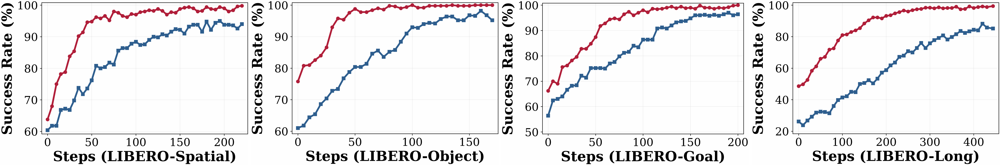

Success Rate (%) across four task suites. Bold marks the best per column; our method ranks #1 on every suite.
| Model | Paradigm | Spatial | Object | Goal | Long | Average |
|---|---|---|---|---|---|---|
| OpenVLA | SFT | 84.7 | 88.4 | 79.2 | 53.7 | 76.5 |
| GR00T-N1 | SFT | 94.4 | 97.6 | 93.0 | 90.6 | 93.9 |
| π0 | SFT | 96.8 | 98.8 | 95.8 | 85.2 | 94.2 |
| π0.5 | SFT | 98.8 | 98.2 | 98.0 | 92.4 | 96.9 |
| OpenVLA-OFT | SFT | 97.6 | 98.4 | 97.9 | 94.5 | 97.1 |
| GRAPE† | RL | 88.5 | 92.1 | 83.1 | 57.2 | 80.2 |
| TGRPO† | RL | 90.4 | 92.2 | 81.0 | 59.2 | 80.7 |
| VLA-RL† | RL | 90.2 | 91.8 | 82.2 | 59.8 | 81.0 |
| SimpleVLA-RL | RL | 98.2 | 98.7 | 98.8 | 91.7 | 96.9 |
| πRL‡ | RL | 99.6 | 100.0 | 99.6 | 94.0 | 98.3 |
| LaST-R1 (Ours) | RL | 99.8 | 100.0 | 100.0 | 99.4 | 99.8 |
†full-trajectory warm-up · ‡two-camera-view training · others use single-trajectory, single-view data, matching our setting.

Starting from the same one-trajectory warm-up model, LaST-R1 trained with LAPO improves more quickly than Action-Only+PPO across the LIBERO suites. The paper attributes this sample efficiency to latent CoT optimization: environmental rewards shape both reasoning tokens and action sequences, smoothing online RL instead of updating only physical actions.
At convergence, LaST-R1+LAPO ranks first across Spatial, Object, Goal, and Long in the LIBERO comparison table, reaching a 99.8% average success rate. The paper highlights the Long suite as the clearest gap, reporting 99.4% for LaST-R1 and 94.0% for πRL, consistent with stronger long-horizon manipulation.
LaST-R1 achieves zero-shot generalization to unseen objects, backgrounds, and lighting conditions after RL post-training. By interacting with the physical world, the VLA model learns from real feedback, enabling it to better capture environment–robot dynamics and generalize beyond memorized demonstration data.
These trends follow the paper's result analysis: latent CoT optimization smooths the RL optimization landscape and enables sample-efficient online learning.
We deploy LaST-R1 on Franka Research 3 hardware across four manipulation tasks — one single-arm and three dual-arm: Insert hexagon block, Open bag zipper, Wipe the Vase with a Sponge, and Open bottle cap. Each task uses only 30 expert demonstrations collected via space mouse for SFT warm-up (full fine-tuning), then LoRA-based online RL. Every task is evaluated across 20 rollouts at varied tabletop positions under three OOD settings: Unseen-Object / Unseen-Background / Unseen-Lighting.
Mirrors Table 3 of the paper. Numbers in parentheses show the relative drop vs. each task's Original column (smaller drop = stronger OOD robustness). Average Original success climbs from 52.5% after warm-up to 93.75% after RL.
| Stages | Insert hexagon block | Open bag zipper | ||||||
|---|---|---|---|---|---|---|---|---|
| Original | Unseen-Object | -Background | -Lighting | Original | Unseen-Object | -Background | -Lighting | |
| After warm-up | 45 | 35 (-22%) | 35 (-22%) | 40 (-11%) | 55 | 30 (-45%) | 50 (-9%) | 45 (-18%) |
| After RL | 90 | 75 (-16%) | 85 (-5%) | 80 (-11%) | 95 | 80 (-15%) | 95 (-0%) | 90 (-5%) |
| Stages | Wipe the Vase with a Sponge | Open bottle cap | ||||||
|---|---|---|---|---|---|---|---|---|
| Original | Unseen-Object | -Background | -Lighting | Original | Unseen-Object | -Background | -Lighting | |
| After warm-up | 65 | 35 (-46%) | 40 (-38%) | 20 (-69%) | 45 | 30 (-33%) | 30 (-33%) | 35 (-22%) |
| After RL | 95 | 80 (-15%) | 90 (-5%) | 95 (-0%) | 95 | 95 (-0%) | 80 (-15%) | 85 (-10%) |
Each cell averages 20 independent rollouts at varied tabletop positions. The table reports the original training scenario and three real-world generalization settings: unseen objects, background variations, and lighting conditions.
Vision-Language-Action (VLA) models have increasingly incorporated reasoning mechanisms for complex robotic manipulation. However, existing approaches share a critical limitation: whether employing explicit linguistic reasoning that suffers from latency and discretization, or utilizing more expressive continuous latent reasoning, they are predominantly confined to static imitation learning that limits adaptability and generalization. While online reinforcement learning (RL) has been introduced to VLAs to enable trial-and-error exploration, current methods exclusively optimize the vanilla action space, bypassing the underlying physical reasoning process.
In this paper, we present LaST-R1, a unified VLA framework that integrates latent Chain-of-Thought (CoT) reasoning over physical dynamics prior to action execution, along with a tailored RL post-training paradigm. Specifically, we propose Latent-to-Action Policy Optimization (LAPO), a novel RL algorithm that jointly optimizes the latent reasoning process and the action generation. By bridging reasoning and control, LAPO improves the representation of physical world modeling and enhances robustness in interactive environments. Furthermore, an adaptive latent CoT mechanism is introduced to allow the policy to dynamically adjust its reasoning horizon based on environment complexity.
Extensive experiments show that LaST-R1 achieves a near-perfect 99.8% average success rate on the LIBERO benchmark with only one-shot supervised warm-up, significantly improving convergence speed and performance over prior state-of-the-art methods. In real-world deployments, LAPO post-training yields up to a 44% improvement over the initial warm-up policy across four complex tasks, including both single-arm and dual-arm settings. Finally, LaST-R1 demonstrates strong generalization across simulated and real-world environments.
@misc{chen2026lastr1,
title = {LaST-R1: Reinforcing Action via Adaptive Physical
Latent Reasoning for VLA Models},
author = {Hao Chen and Jiaming Liu and Zhonghao Yan and Nuowei Han
and Renrui Zhang and Chenyang Gu and Jialin Gao and Ziyu Guo
and Siyuan Qian and Yinxi Wang and Peng Jia and Chi-Wing Fu
and Shanghang Zhang and Pheng-Ann Heng},
year = {2026}
}